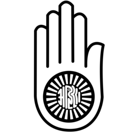

Understanding Dharma
Dharma is a fundamental concept in Hinduism, Buddhism, and other Eastern philosophies. It refers to the moral, ethical, and spiritual duties that individuals are expected to follow in their lives. These duties are often shaped by one's role in society, their relationships with others, and their personal path to spiritual fulfillment.
Dharma as Duty
In its most basic form, Dharma is about fulfilling one's duties, whether in a family, society, or in relation to the divine. It involves living in harmony with cosmic laws, contributing to the greater good, and maintaining balance in life. These duties can vary based on ones age, caste, occupation, and other social roles.
For instance, a parents duty is to care for their children, while a ruler's duty is to protect and govern with justice. Dharma emphasizes that by fulfilling these duties, individuals can live virtuous and righteous lives.
Competing Interests in Dharma
While Dharma emphasizes fulfilling one's duties, it is often complicated by competing interests and moral dilemmas. In real life, individuals may encounter situations where fulfilling one duty conflicts with another. This tension is where Dharma as a guiding principle is truly tested.
For example, a business leader may face the challenge of balancing the interests of their employees, customers, and shareholders. Each group has different needs and expectations, and fulfilling one set of interests may harm another. Here, Dharma teaches individuals to make decisions that maintain balance and integrity while considering the greater good.
Similarly, personal desires and social obligations often conflict. A person may have the desire to pursue a career or hobby, but their duty to family may require sacrifices. Dharma encourages individuals to act in a way that does not disregard their own well-being but still adheres to moral responsibility and ethical living.
Different Types of Dharma
Virtues such as Ahimsa (Non-Violence)
Ahimsa, which means non-violence or non-harm, is one of the most important virtues in various Indian religions such as Hinduism, Buddhism, and Jainism. It is the ethical principle that emphasizes not causing harm or violence in any form—be it physical, mental, or emotional—towards any living being. Ahimsa is integral to Dharma because it encourages compassion, empathy, and peaceful coexistence with all life forms.
In practical terms, Ahimsa encourages actions and thoughts that avoid harm, promote peace, and emphasize kindness. It is not limited to just actions but extends to speech and thoughts as well. By practicing Ahimsa, individuals contribute to the well-being of society and promote an environment of harmony and understanding.
Yoga and Personal Behaviour
Yoga in this context refers not just to physical postures (as commonly understood in the West) but to a disciplined approach to life and spiritual practices aimed at achieving self-realization and union with the divine. This involves practicing meditation, ethical conduct, mindfulness, and living according to moral and spiritual guidelines.